| 遊 戲 介 紹 | |||
|---|---|---|---|
| 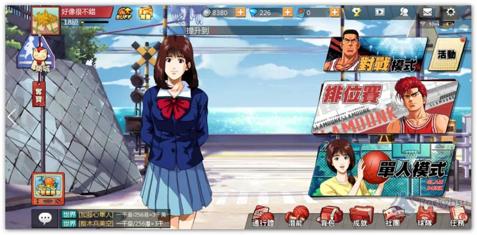 | 遊戲首頁 ─ 打開APP後，進行緩衝以後進入畫面，此畫面為遊戲首頁可以進行多項選擇(遊戲模式&配對、購買相關技能等...)。 | 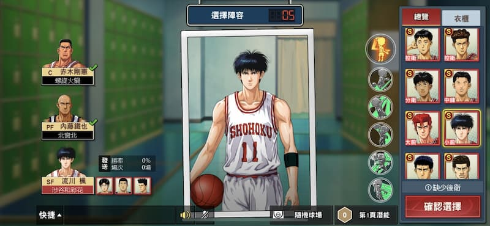 | 角色選擇─遊戲配對完成，進行角色選擇，依照喜好選擇遊戲角色，球員選擇有預設也可以自行利用代幣或是遊戲獎勵進行購買。 |
| 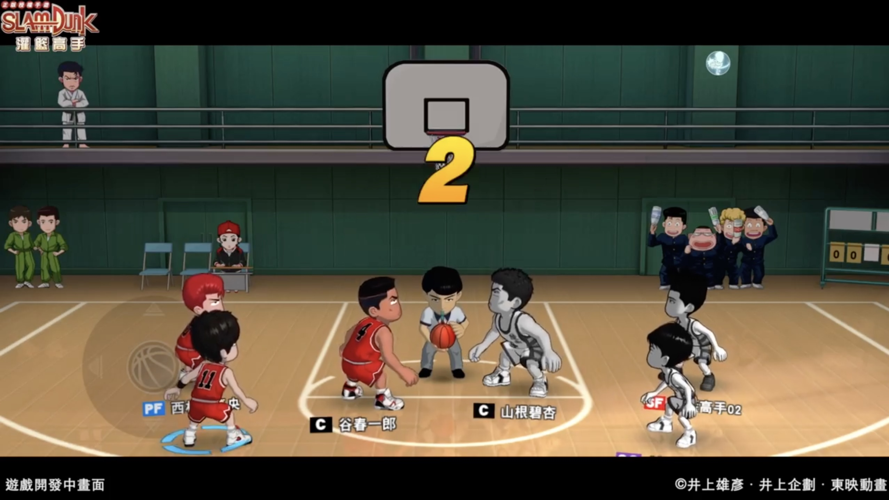 | 遊戲準備開始 ─ 選角完成後，進入遊戲，並由電腦篩選跳球人員，於中間進行跳球確認球權。 | 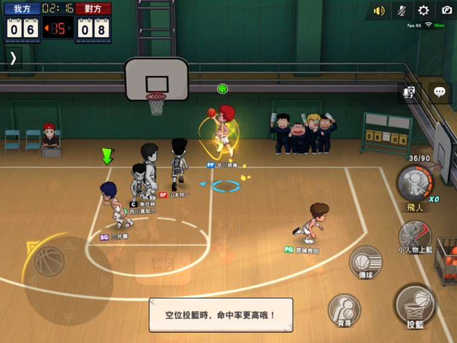 | 遊戲進行中畫面 ─ 跳完球後比較開始，兩隊進行對戰，一場比賽有時間與進攻時間限制，時間終了前分數較多者為勝利方。 |
| 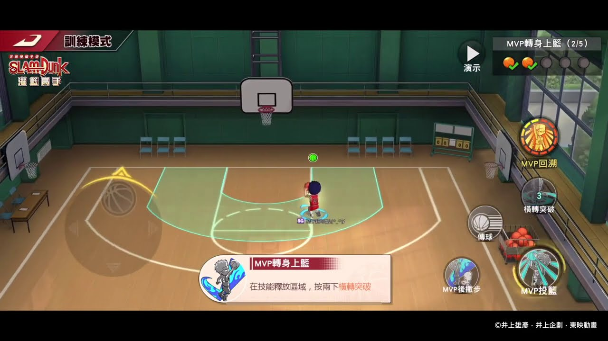 | 訓練模式 ─ 可以依照球員之技能進行訓練，以提升能力並在比賽中加以運用。 | 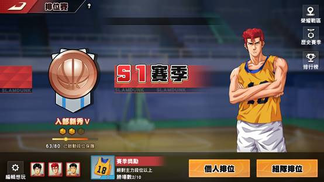 | 賽季畫面 ─ 依照各季推出不同賽季，可以與線上玩家進行對戰，分成個人排位賽與組隊排位賽。 |
| 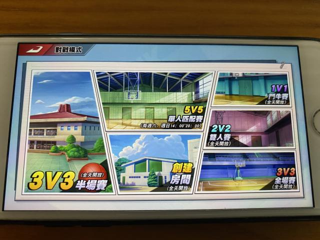 | 對戰模式 ─ 進行遊戲前自行挑選想挑戰的球賽模式，再進行遊戲的配對，但不是所有模式都是全天候開放，會依照不同時段進行開放。 | 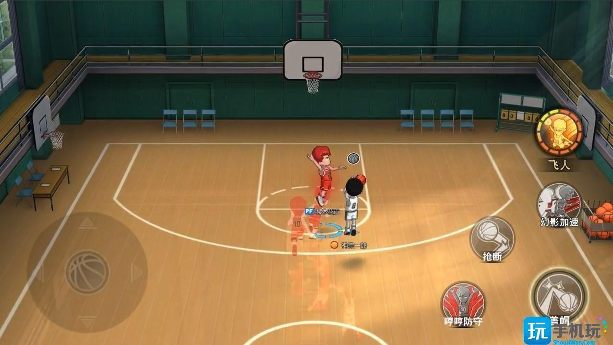 | 比賽模式 ─ 球賽分成四種模式進行比賽，此模式為一對一的模式，可以依個人喜愛進行遊戲。 |
| 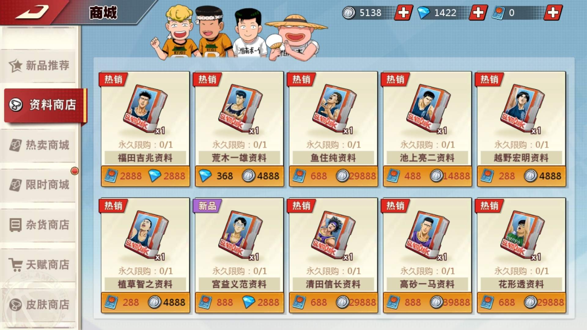 | 角色購買 ─ 進入商店的畫面，可以進行角色的購買，各個球員因時段不同會推出限時免費供玩家選擇，也可以自行購買永久使用。 | 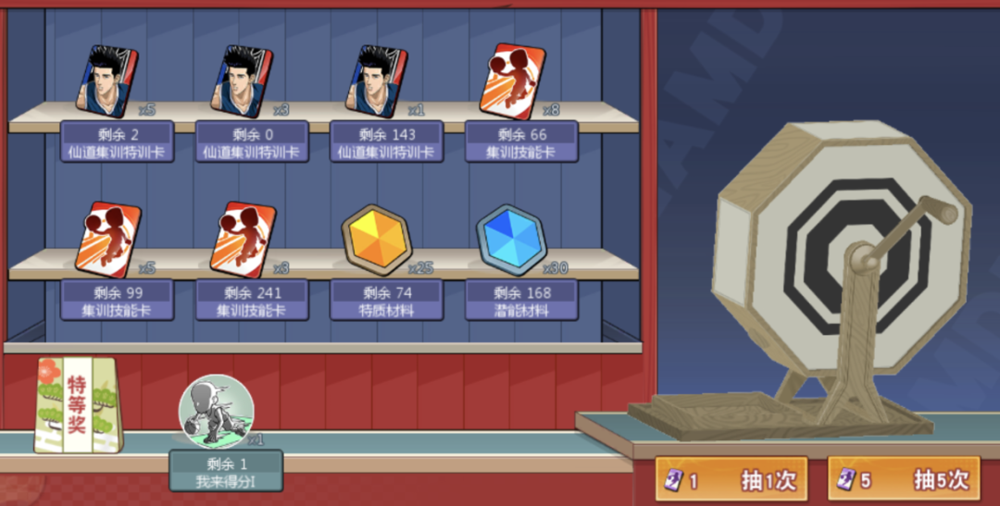 | 限時活動 ─ 遊戲會因為各節日推出不同限時活動進行玩家挑戰，每項活動的獎勵皆不相同。 |
| 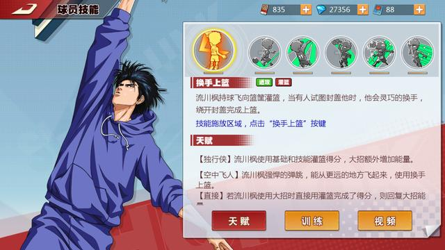 | 球員技能 ─ 玩家本身所擁有的球員，可以依照所獲取的道具進行球員技能提升，每個球員的技能不同，故每個球員皆有自己的球員訓練卡供玩家獲得。 | 玩家背包 ─ 在玩家的背包中，大部分為遊戲獎勵所獲取，有些則會因時段活動所獲得，或者是玩家自行在商店進行購買。 | |